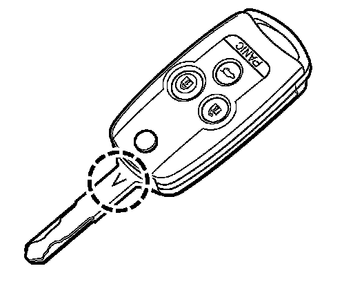
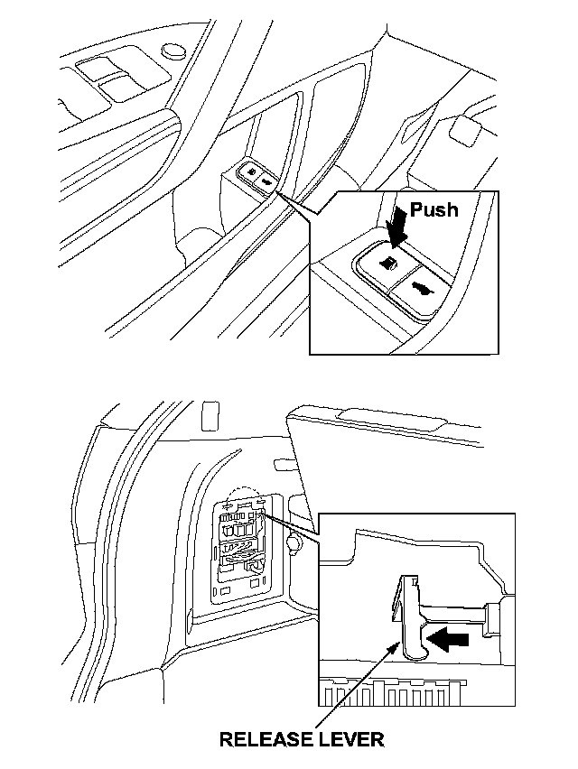
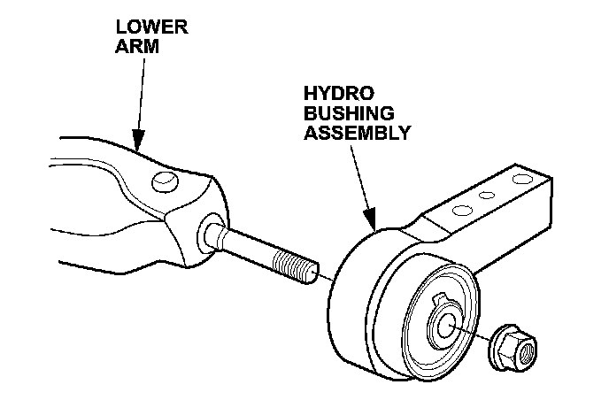
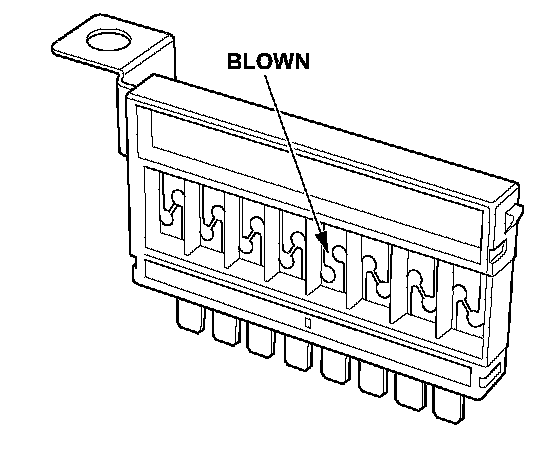
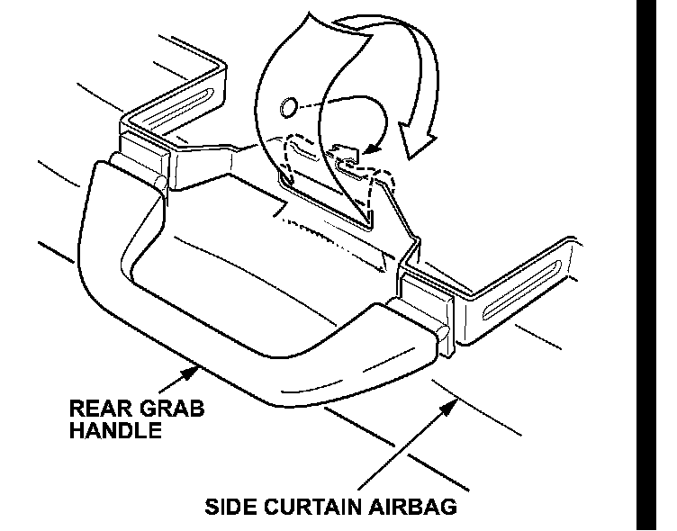

New Model Information 2
AcuraLink and Real-Time Traffic (Models With Navigation)AcuraLink provides a direct communication link between the vehicle and Acura in order to provide Acura clients with operating tips, maintenance information, important campaign and safety information, as well as diagnostic information. Working through the XM Satellite Radio, AcuraLink uses the vehicle's navigation, HFL, and audio systems.
Real-time traffic data is also provided to the navigation screen through XM NavTraffic. Real-time traffic uses color codes to indicate traffic flow speeds on major metropolitan freeways in select areas, and icons for delays caused by accidents, construction, or bad weather. The client can set their AcuraLink messaging preferences on the Owner Link Web site.
NOTE:
The Phone Data Connection requires a Bluetooth-compatible, enabled cell phone that has been paired to HFL and a compatible data service.
MID (Multi-Information Display)
The MID contains new warnings for the active damper system and trailer stability assist, and allows the customization of more features. The MID keeps the driver informed of vehicle status and provides easy access to several electronic functions. It also alerts the driver to potential problems like a loose fuel cap or driving with the parking brake set, as well as needed maintenance.
The MID can be used to customize the operating conditions of many electronic features such as auto door locking and unlocking, keyless lock acknowledgement, the security relock timer, the headlight auto-off timer, and the interior light dimming timer. Sales staff will set these features to the client's preferences (see Personalized Settings Check Sheet in the TQI Procedures section of this bulletin). The MID screen is located below the fuel and engine temperature gauges.
Type-6 Immobilizer System

The Type-6 immobilizer system uses a new rolling code method for key identification. You cannot program new keys using T5 ILCO blanks. The correct key blank has a "V" stamped on the key shank.
All models come with two master keys and one valet key that does not have the master key fob functions. Up to six keys can be programmed per vehicle.
NOTE:
Refer to Service Bulletin 06-033 Immobilizer System (Type 6) for more information.
Retractable Master Key
Each master key retracts into the integrated remote transmitter to create a more compact key fob. To use the key, push the release button to pop the spring-loaded key out of the remote. To retract the key, push and hold the release button while pushing the key into the remote until it is securely latched.
NOTE:
For the immobilizer system to work properly, the key must be fully extended before it is inserted into the ignition switch.
Key and Remote Transmitter Operation
The doors can be locked and unlocked using the key or remote transmitter. The windows and moonroof can also be opened with either device. Here's how:
Options Using the Key
Unlock the doors:
Insert the key into the driver's door lock, turn it clockwise and release it to unlock the driver's door. Then turn it clockwise a second time and release it to unlock all the doors and the tailgate.
Lock the doors:
Insert the key into the driver's door lock, turn it counterclockwise, and release it to lock all the doors and the tailgate.
Open windows/moonroof:
Insert the key into the driver's door lock, turn it clockwise and release it. Then turn it clockwise a second time and hold it. All four windows and the moonroof will begin to open. To stop them, release the key. To continue opening, you must turn and hold the key again within 5 seconds of releasing it.
Close windows/moonroof:
This is the same sequence as opening the windows, but you turn the key the other way. Insert the key into the driver's door lock, turn it counterclockwise and release it. Then turn it counterclockwise a second time and hold it. All four windows and the moonroof will begin to close. To stop them, release the key. To continue closing, you must turn and hold the key again within 5 seconds of releasing it.
NOTE:
Auto-reverse does not work when you close the windows and the moonroof with the key.
Options Using the Remote Transmitter Unlock the doors:
Press the UNLOCK button on the remote once to unlock the driver's door. Press UNLOCK twice to open all doors. (Using the MID, the remote unlock operation can be changed to open all doors on the first push.)
Lock the doors:
Press the LOCK button on the remote once. This button does not work if any door or the tailgate is not closed.
Open windows/moonroof:
Press the UNLOCK button once to unlock the door(s), then press it again and hold it. All doors unlock, and the windows and the moonroof begin to open. To stop them, release the UNLOCK button. To continue opening the windows and the moonroof, press and hold the UNLOCK button again within 15 seconds.
NOTE:
^ The remote transmitter cannot be used to close the windows and the moonroof.
^ Memory 1 and 2 are indicated on the back of the remote.
^ Each remote uses two commercially available batteries (type CR1616).
^ The rear windows and the moonroof begin closing a half-second before the front windows; this is normal.
NOTE:
The number of LED blinks is the opposite of the RL remote transmitter.
Auto-Up/Down and Auto-Reverse Front Windows, and Moonroof Functions
The driver's window, front passenger's window, and moonroof have the auto-up/down and auto-reverse functions.
NOTE:
^ The auto-up/down function must be initialized whenever the battery is disconnected, or after any window parts are replaced (and after installing accessory door visors).
^ The auto-up/down windows also have auto-reverse (anti-pinch), but auto-reverse does not require initialization if the battery is disconnected.
^ Auto-up/down can also be initialized using the HDS.
Driver Position Memory and Keyless Memory Settings
As with the previous MDX, using a remote transmitter to unlock the door triggers certain driver position presets, such as seat and outside mirror position. Two sets of driver positions can be stored using the memory buttons on the driver's door. The new memory system also stores steering wheel position, climate control settings, and radio station presets.
A new system called Keyless Memory Settings further expands the memory functions of the remote transmitters. The system lets you set 11 other vehicle functions through the MID, such as interior illumination, door lock/unlock, and headlight on/off.
NOTE:
If the driver position memory does not function, the position setup options in Keyless Memory Settings may have been turned OFF. If so, even if the remote is linked (when you start the engine, the MID says Driver 1 or Driver 2), the position memory settings will not function because they're turned OFF. Check the settings using the MID.
Side Mirrors with Automatic Reverse-Gear Tilt-Down
The outside mirror tilt feature has changed.
^ To make the driver's side mirror tilt down when shifting to R, move the mirror switch to its L position.
^ To make the passenger's side mirror tilt down, move the mirror switch to its R position.
^ To turn off the mirror tilt-down feature, move the mirror switch to its middle position.
Auto Dimming Instrument Panel
When the headlight switch is in any position except OFF, a light sensor automatically adjusts the instrument panel brightness according to the surrounding light conditions. For vehicles with navigation, the sensor also switches the navigation screen between day and night modes. You can customize how much the brightness changes using the MID (choose meter setup, then auto interior sensitivity).
One-Touch Starter System
This feature eliminates the need to hold the key in the START (III) position until the engine starts. The one-touch starter ensures a positive start and helps prevent a "no start" situation if the driver releases the key too early. This is how the one-touch start system works:
^ Without touching the accelerator pedal, turn the ignition switch to the START (III) position, then release the ignition switch. You do not need to hold the ignition switch in the START (III) position to start the engine. Depending on the outside temperature, the start motor runs for about 6 to 9 seconds until the engine starts.
^ If you hold the ignition switch in the START (III) position for more than 7 seconds, the starter motor, depending on the outside temperature, runs for about 10 to 25 seconds until the engine starts.
^ If the engine does not start, wait at least 10 seconds before trying again.
Sequential SportShift
The new automatic transmission has Sequential SportShift, allowing the transmission to be shifted manually. From D, move the shift lever to the left into the gate. Shift to a higher gear by pushing the lever forward, and pull back on the lever to downshift.
Shift-Hold Control
With this feature, the PCM monitors the average change in vehicle speed and throttle to determine when the vehicle is being driven on a winding road. When these values exceed those for normal driving conditions, shift-hold control prevents the transmission from frequently shifting between 3rd, 4th, and 5th gears. Normal shifting resumes when the PCM determines that normal driving has resumed.
Maintenance Minder
The new maintenance minder is similar to the one on the RL, but the 2007 MDX minder calculates the remaining fluid life for the automatic transmission, rear differential, and engine oil life.
For more information on the Maintenance Minder, refer to the 2007 MDX Service Manual or the 2007 MDX Maintenance Journal.
NOTE:
After servicing, reset the maintenance minder.
TPMS (Tire Pressure Monitoring System)
TPMS continuously monitors tire pressure while the ignition is in the ON (II) position. The system alerts the driver when the tire pressure drops significantly below the correct tire pressure (32 psi). The MID displays the inflation pressure of all four tires.
NOTE:
^ 2003-2006 MDX tire pressure sensors and 2007 MDX sensors are not interchangeable.
^ Extreme altitude and cold weather can affect the tire pressure. Make sure you set the pressures when the tires are cold so they are as accurate as possible.
^ The TPMS indicator will not come on if the tires are overinflated.
*Automatic Headlight Leveling System (Sport Models)
The Sport model headlight system automatically adjusts the vertical aim of the low beam headlights. The system consists of a control unit, left front and left rear stroke sensors, and left and right leveling motors. The sensors detect changes in vehicle height due to driving and loading conditions. By using the two left-side stroke sensors of the active damper system, the system checks vehicle height every 3 minutes. If the control unit detects a change, it adjusts the vertical position of the headlights.*
Normally, the system adjusts the low beam headlights only when the ignition is in the ON (II) position and the vehicle speed has been constant for about 3 seconds.
NOTE:
^ The auto-leveling system does not set DTCs.
^ If a headlight, stroke sensor, or the auto-leveling control unit is replaced, the auto-leveling headlight system must be initialized. For more information, refer to the Body Electrical section of the 2007 MDX Service Manual.
DRL (Daytime Running Lights)
The DRL and fog lights do not work at the same time.
NOTE: Engage the parking brake before turning the ignition switch to ON (II) to keep the DRL off while doing service.
HID Headlights With Theft Protection
The HID headlights have a security cable attached to the headlight ballast to prevent theft. When replacing the headlight, remove the security cable bolt to detach the cable.
LED Lighting
Many of the exterior lights are now LEDs, including the front- and rear-side marker lights, turn signal mirror lights, the high-mount brake light, and the taillights.
SVC (Speed-Sensitive Volume Compensation)
All MDX audio systems have SVC, which automatically adjusts the volume according to vehicle speed. SVC can be set to four different levels (off, low, mid, high). To access the SVC setting, press the AUDIO button on the front control panel, and then press SOUND. SVC is at the bottom of the display.
Active Front Head Restraints
During an impact, the driver's and passenger's head restraints move forward and up, then lock in place to lessen potential whiplash effect. The system is mechanical; its working parts are located inside the front seat-backs and do not require maintenance. After a collision, they must be inspected (refer to the service manual).
Towing
Trailer Towing
The maximum trailer towing capacity is 5,000 pounds. A new transmission cooler and power steering cooler are standard. The vehicle is pre-wired for a trailer connector and electric brakes.
NOTE:
^ When servicing the ATF cooler, do not remove the hoses from the ATF cooler. The ATF hoses come as a unit with the cooler.
^ Acura does not recommend the use of load-distributing hitches.
Emergency Towing
The vehicle should be transported on a flat-bed truck or trailer. Towing with only two wheels on the ground will damage parts of the SH-AWD system.
The vehicle comes with a detachable tow hook that can be used for very short distances, such as freeing the vehicle. The tow hook can be mounted to an anchor in the front or rear bumper. It is stored behind a cover under the cargo area (the same as the RL and TL).
NOTE:
To avoid vehicle damage, use the tow hook for straight, flat ground towing. Do not use the tow hook to tow the vehicle onto a flat bed or as a tie down.
Towing Behind a Motorhome
Do not tow behind a motorhome, whether on all four wheels or on a dinghy; the transmission and rear differential will be damaged.
Electric Fuel Fill Door

The electric fuel fill door opens completely when you press the switch in the driver's door pocket. If there is an electrical problem, a manual release lever is located inside the rear fuse box. Pull the lever rearward.
A/C Power Outlet (Entertainment Package)
A 115-volt, AC power outlet is located inside the front console for easy accessibility. With the ignition switch in the ON (II) position and the engine running, you can use the outlet to power items such as video game consoles, laptop, PCs, DVD players, etc. The maximum capacity is 115 volts AC at 100 watts or less. The outlet has a swivel plug and protective cover. To use, insert the plug, turn it 90 degrees clockwise, and then push in the plug all the way.
NOTE:
This outlet has no power when the ignition is in LOCK (0).
Center Console
The center console is a new modular unit. The console assembly must be separated from the instrument panel before the gear shifter can be serviced. The recommended gear position during service is R. The shifter wire and nut are accessible through the beverage holder.
Front Suspension Hydro Bushing

The front suspension uses hydro bushings, which use fluid to dampen vibrations from shimmy and brake judder.
NOTE:
The hydro bushing is not replaceable. Replace the bushing and the bracket as a set. Do not press the hydro bushing out of the bracket.
Main Fuse Box Multi-Fuses

The main fuse box includes two multi-fuses. Each individual fuse element is visible through the clear cover. If one fuse blows, the entire multi-fuse must be replaced. The multi-fuses are installed with a screw.
Rear Grab Handle

Due to the installation of side curtain airbags, maintenance or replacement of the rear grab handles requires the curtain airbag cushion tab be removed from the bracket. Replacement brackets must have the cushion tab reinstalled as shown below. Route the tab through the bracket, over the top, and hook the tab onto the bracket's arrow tab.
SRS Service
The new instrument panel has a soft upper pad and seamless front passenger airbag lid. Remove the glove box, and then remove the passenger's SRS module from underneath. (Refer to the Restraints section of the 2007 MDX Service Manual) This is similar to the RL and TSX.
Service Connector Location
The SCS connector is located in the fuse box under the driver's side of the dashboard.